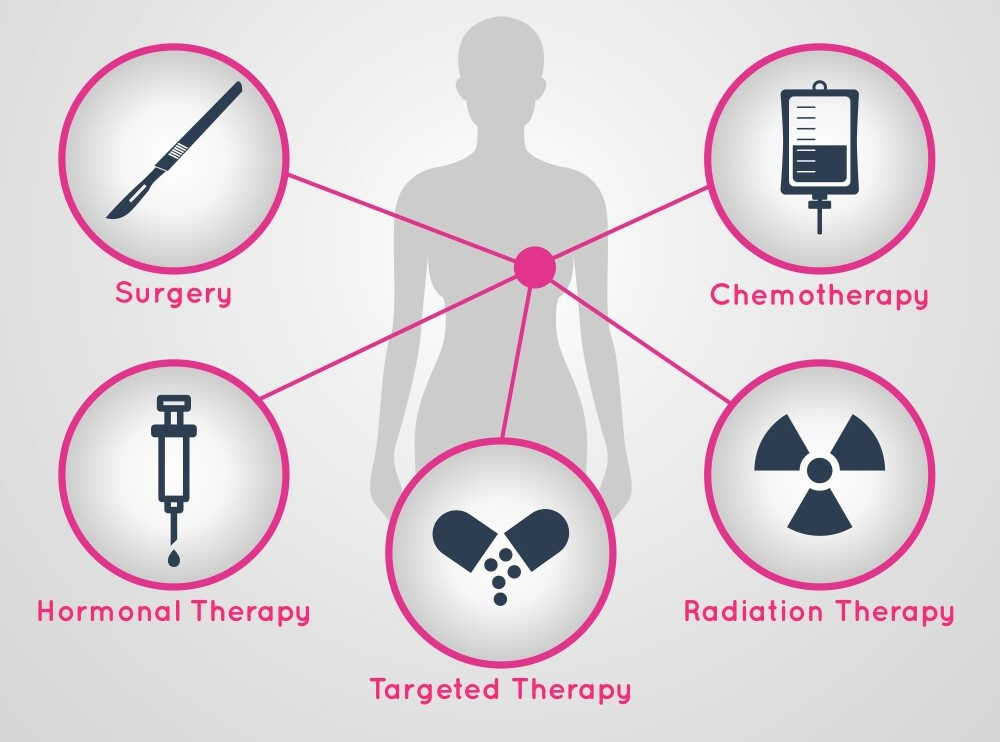
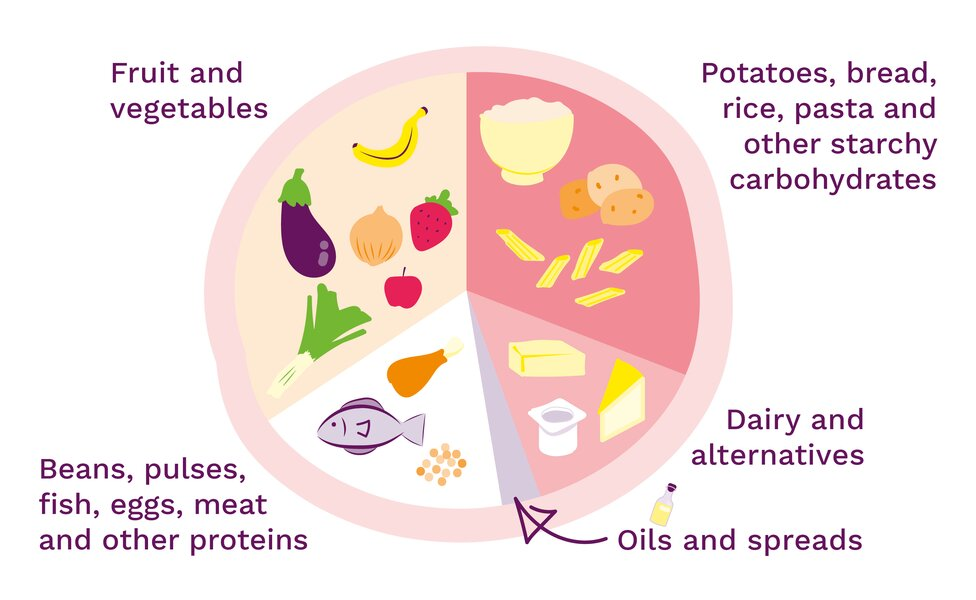

| Learn about your treatment. |
 |
Understanding your treatment options empowers you to make informed decisions about your care. By knowing the purpose, benefits, and potential side effects of treatments like surgery, chemotherapy, radiation, or targeted therapies, you can better prepare for what lies ahead. This knowledge reduces fear of the unknown and allows you to communicate effectively with your healthcare team. It also helps you actively participate in your care plan, ensuring it aligns with your values and needs. |
| Eat a balanced diet |
 |
A nutritious diet is essential during cancer treatment, as it helps maintain your strength, supports your immune system, and improves recovery. Include a variety of fruits, vegetables, whole grains, lean proteins, and healthy fats in your meals. Proper nutrition can also combat side effects like fatigue or nausea and reduce inflammation. Consulting a dietitian who specializes in oncology can help tailor your diet to meet your specific needs, making it easier to stay nourished and energized during treatment. |
| Exercise regularly when you can |
|
Engaging in light to moderate physical activity, such as walking, yoga, or stretching, can significantly benefit breast cancer patients. Exercise boosts mood, reduces fatigue, and helps manage side effects like joint pain and weight gain associated with certain treatments. It can also improve circulation and overall cardiovascular health, which are critical during recovery. Always consult your doctor before starting any exercise routine to ensure it aligns with your energy levels and physical condition. |
| Get enough rest |
|
Adequate rest is vital for the body to heal and recover from the effects of cancer and its treatments. Fatigue is a common side effect, and prioritizing sleep or relaxation can help you regain energy and improve overall well-being. Resting also supports your immune system and helps your body repair itself. Creating a calming bedtime routine, such as reading or meditating, can enhance sleep quality, which is often disrupted during treatment. |
| Build a support team |
|
Having a network of supportive friends, family, or fellow patients can provide emotional strength and reduce feelings of isolation. A support team can assist with practical tasks like cooking or transportation, allowing you to focus on recovery. Emotional support from loved ones or cancer-specific support groups can help you process your feelings, reduce stress, and stay motivated throughout treatment. Sharing experiences with others who understand what you're going through can be particularly uplifting. |
| Drink lots of water |
 |
Staying hydrated is critical during cancer treatment to help your body flush out toxins and reduce side effects such as dry skin, constipation, and fatigue. Proper hydration supports kidney function, which may be taxed by certain medications, and helps your body maintain energy levels. Sipping water throughout the day, especially during chemotherapy or after exercise, ensures you stay hydrated without overwhelming your stomach. Adding natural flavors like lemon or cucumber can make drinking water more enjoyable. Drinking water with electrolytes in it may also help diminish dehydration better. |